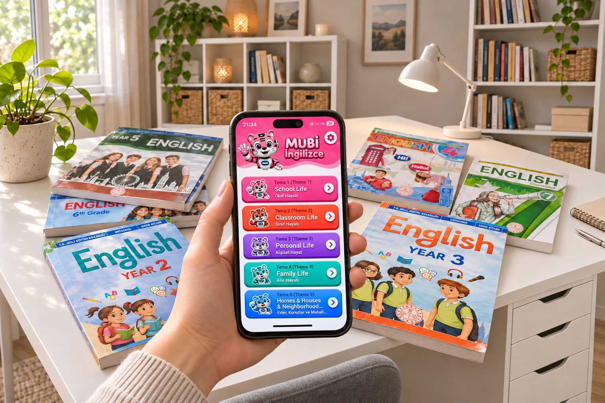
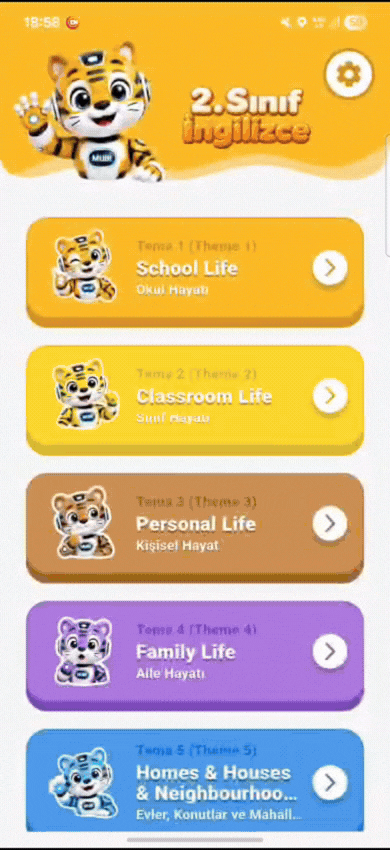

DERS KİTABINLA AYNI YOLDA
Okulda gördüğün konu, burada.
Ders kitabındaki içeriklerle birebir paralel üniteler sayesinde okulda öğrendiklerini evde kolayca tekrar et ve pekiştir.
Kelime kartları, testler ve dinleme etkinlikleriyle
keşfet, öğren, pekiştir.

MUBİ İngilizce Uygulamaları
Üyelik yok, Ücretli Abonelik Yok!
Okulda öğrendiğin üniteyi seç,hemen öğrenmeye ve anında pekiştirmeye başla!
SİZDEN GELENLER
Google Play ve App Store’dan seçtiğimiz kullanıcı yorumları.
Ben aşık oldum çok güzel ben sıfır İngilizce’yle ilk günden çok güzel şeyler öğrendim ve çok eğlenceli 12 yaşında bu kadar bilgi öğrenmek gerçekten de bir ayrı güzel ben bayıldım bana çok yardımcı oldu artık ikinci uygulamam oldu birinci Duolingoydu ikinci de bu oldu ben çok beğendimApp Store yorumu
okul müfredatıyla uyumlu ikinci sınıfa giden oğlum ilk konuyu eğlenerek öğrendi güzel bir uygulama emeğinize sağlıkGoogle Play yorumu
Kardeşim için yüklemiştik gerçekten faydalı bir uygulama emeğinize sağlıkApp Store yorumu
İngilizce öğretmenimizin tavsiyesi üzerine oğlum için kurdum,çok yardımcı oldu bize. Yapanların eline sağlıkGoogle Play yorumu
Ablamın oğlu için indirdim, hem tasarım hem ses özelliğini çok beğendi, okulda derler başlamadan öğrenmeye başladı bile, teşekkürlerApp Store yorumu
Yeni başlayanlardanım şimdilik iyi gidiyorGoogle Play yorumu
BİRLİKTE DAHA EĞLENCELİ
Yeni içerikler, eğlenceli paylaşımlar ve minik sürprizler için Instagram’da buluşalım.
@mubi.ingilizceSIKÇA SORULAN SORULAR
MUBİ İngilizce Uygulamalarını tanımaktan ilk kelimeni öğrenmeye kadar, ihtiyacın olan cevaplar burada.
Başka bir sorun mu var? Bize yaz ↗MUBİ İngilizce Uygulamaları, 2. sınıftan 8. sınıfa kadar öğrenciler için hazırlanmış İngilizce öğrenme ve pratik uygulamalarıdır. Kelime kartları, testler ve dinleme etkinlikleriyle okulda öğrenilenleri pekiştirmeye yardımcı olur.
MUBİ İngilizce Uygulamalarının kelime çalışmalarında odağı kelimenin yazılışı, Türkçe anlamı ve seslendirmesinde tutmayı tercih ediyoruz. Böylece kelimeyi yalnızca bir resimle eşleştirmek yerine anlamını ve okunuşunu birlikte tekrar edebilirsin. MUBİ İngilizce Uygulamaları karakterleri arayüze renk katarken kelime kartlarında sade bir çalışma alanı sunuyoruz.
Evet! MUBİ İngilizce Uygulamalarını ücretsiz indirebilir ve ücretsiz kullanabilirsin. Sınıfına uygun uygulamayı bu sayfadaki indirme alanından seçerek başlayabilirsin.
Hayır. MUBİ İngilizce Uygulamalarında üyelik oluşturman gerekmez. Sınıfına uygun uygulamayı indirerek içerikleri kullanmaya başlayabilirsin.
MUBİ İngilizce Uygulamalarının en önemli farkı, ders kitabındaki içeriklerle birebir paralel olmasıdır. 2. sınıftan 8. sınıfa kadar her sınıf için ayrı uygulama sunar; okulda öğrendiğin ünite ve kelimeleri kelime kartları, çift yönlü testler, dinleme ve boşluk doldurma etkinlikleriyle tekrar edip pekiştirebilirsin. Üyelik ve ücretli abonelik gerektirmeden kendi hızında çalışabilirsin.
MUBİ İngilizce Uygulamalarında hesap oluşturman gerekmediği için üyelik amacıyla ad, e-posta veya telefon numarası istenmez. Ancak uygulamadaki reklam hizmetleri, cihaz bilgileri ve reklam tanımlayıcıları gibi teknik verileri işleyebilir. Ayrıntıları ilgili mağaza sayfasındaki gizlilik ve veri güvenliği bilgilerinden inceleyebilirsin.
Hayır. MUBİ İngilizce Uygulamalarını kullanmak için ücretli abonelik başlatman veya aylık ya da yıllık abonelik ücreti ödemen gerekmez.
MUBİ İngilizce Uygulamalarının reklam desteğiyle ücretsiz sunulmaya devam etmesi planlanıyor. Amacımız, öğrencilerin İngilizce içeriklerine ücretli abonelik gerekmeksizin ulaşabilmesi.
İngilizce öğrenme ve tekrar içeriklerini daha fazla öğrenciye ulaştırmak istiyoruz. Uygulamadaki reklamlar, MUBİ İngilizce Uygulamalarının ücretsiz sunulmasını destekliyor.
MUBİ İngilizce Uygulamalarında reklam bulunur; bu reklamlar uygulamanın ücretsiz sunulmasını destekler. Reklam yoğunluğu konusunda deneyimini ve önerilerini @mubi.ingilizce hesabından paylaşabilirsin.
MUBİ İngilizce Uygulamalarının 2, 3, 4, 5, 6, 7 ve 8. sınıflar için ayrı İngilizce uygulamaları bulunur. Kendi sınıfına ait uygulamayı seçerek o seviyenin içerikleriyle çalışabilirsin.
İstersen Google Play veya App Store’u doğrudan açıp arama alanına “MUBİ 2. Sınıf”, “MUBİ 3. Sınıf” gibi kendi sınıfına uygun bir arama yazarak da uygulamayı bulup indirebilirsin.
Evet. MUBİ İngilizce Uygulamalarının Google Play ve App Store bağlantıları bu sayfada bulunur. Cihazının uyumluluğunu ve gerekli işletim sistemi sürümünü ilgili mağaza sayfasından kontrol edebilirsin.
MUBİ İngilizce Uygulamaları içerikleri, ilgili sınıfın İngilizce derslerine ve müfredatına paralel tema ve ünitelerle hazırlanır. Okulda işlediğin konuyu uygulamada seçerek tekrar yapabilirsin.
İngilizce ve Türkçe kelime kartları, İngilizceden Türkçeye ve Türkçeden İngilizceye testler, dinleme testleri ve boşluk doldurma etkinlikleri bulunur. Çalışmak istediğin etkinliği ünite ekranından seçebilirsin.
Önce bir tema veya ünite seç, ardından kelime kartlarını aç. Kelimeyi incele, “Seslendir” ile telaffuzunu dinle ve “Anlamını Gör” ile karşılığını öğren. “Biliyorum” ya da “Bilmiyorum” seçeneğiyle kendi durumunu işaretle.
Çalışmak istediğin üniteyi aç ve etkinlikler arasından “İngilizce Dinleme Testi” kartını seç. Ardından ekrandaki yönergeleri izleyerek dinleme çalışmasına başlayabilirsin.
Testler, öğrendiğin kelimeleri hatırlama ve anlamlarıyla eşleştirme pratiği yapmana yardımcı olur. Kelime kartlarından sonra test çözerek öğrendiklerini pekiştirebilirsin.
MUBİ İngilizce Uygulamalarında hazır kelime kartları, testler ve dinleme içerikleriyle kendi hızında çalışırsın. Uygulamada canlı ders veya öğretmenle bire bir eğitim hizmeti bulunmaz.
Sınıfına uygun uygulamayı indir ve okulda işlediğin temayı seç. Önce kelime kartlarını incele, sonra test ve dinleme etkinlikleriyle tekrar yap. Sana uygun süreyi belirleyerek düzenli çalışmaya devam edebilirsin.
Yeni sınıfına ait MUBİ İngilizce Uygulamaları İngilizce Uygulamasını bu sayfadaki indirme alanından seçebilirsin. Her sınıfın mağaza bağlantısı ayrı olarak sunulur.
Instagram’da @mubi.ingilizce hesabına mesaj gönderebilirsin. Sorunu anlatırken kullandığın sınıf uygulamasını, cihazını ve karşılaştığın ekranı belirtmen yardımcı olur. Yeni paylaşımları da aynı hesaptan takip edebilirsin.